1這是什麼
這是一台 TES 規格（TES-0D-02-01）的充電控制器。它接在直流電源和充電槍之間，插上車後會先跟車上的電池管理系統（BMS）透過 CAN Bus 完成充電交握，由車子決定要多少電壓、多少電流、什麼時候停，控制盒負責開關輸出、監看、保護，並把狀態顯示在螢幕與手機上。
- 已實測的車款：eMoving iE125、ZAU ES-2000。其他 TES 規格的車理論上可用，但沒有測試過。
- 電源要是直流 60–120 V，而且電壓要高於車的電池電壓。
- 可以連 WiFi，用手機瀏覽器或 Android App 看即時電壓、電流、電量，設定充到幾 % 停、排程、推播，也能線上更新韌體（OTA）。出門在外可以用遠端監控（6.16）。
- 可以搭配聯明可程式電源，由控制盒直接設定電源的電壓、電流（6.17）；用一般旋鈕電源也可以。
2包裝內容
| 品項 | 數量 |
|---|---|
| 高階款控制盒（上蓋、底座已組好） | 1 |
| 底部雙面膠、接線用配件 待確認：實際附哪些 | — |
| 說明書（本文件，線上提供） | — |
收到後請先看外殼有沒有破裂、按鍵能不能正常按下回彈。有問題請在使用前聯絡我（第 11 章）。
3外觀與各部位
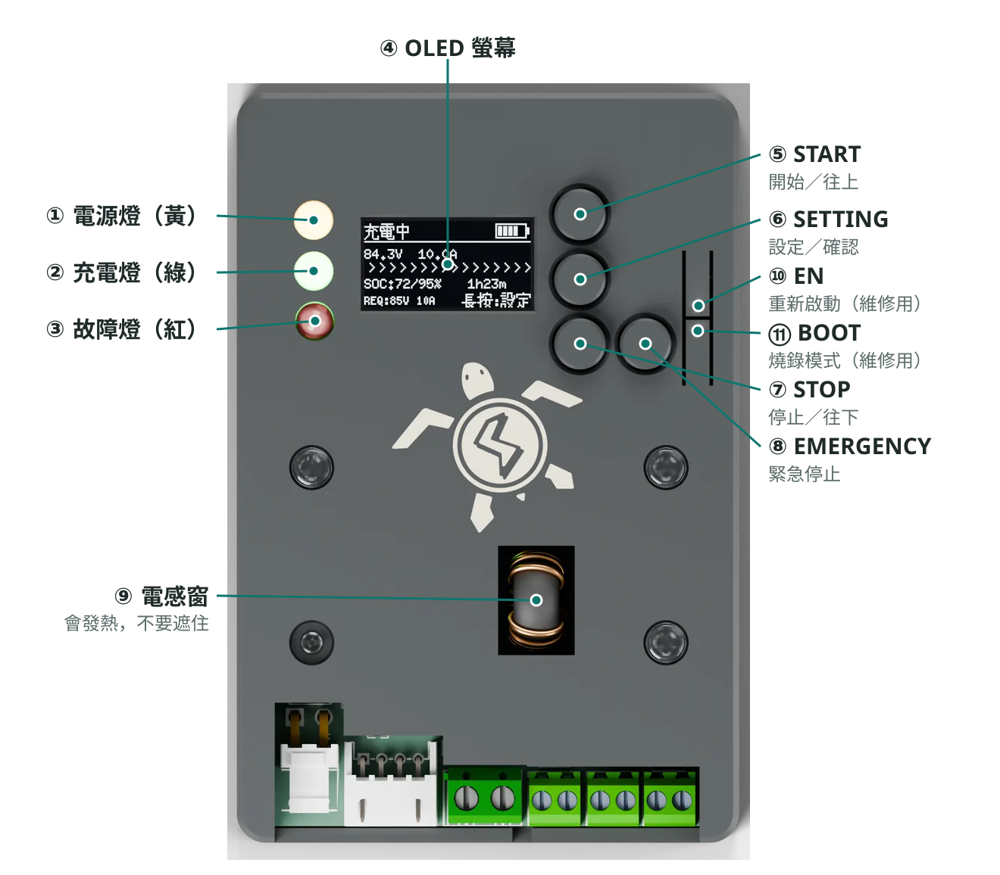
| 編號 | 名稱 | 作用 |
|---|---|---|
| ① | 電源燈（黃） | 通電就亮 |
| ② | 充電燈（綠） | 充電中閃爍、充電完成恆亮 |
| ③ | 故障燈（紅） | 故障或緊急停止時恆亮 |
| ④ | OLED 螢幕 | 狀態、電壓、電流、電量、故障原因、設定選單 |
| ⑤ | START | 開始充電；選單中往上、數值加 |
| ⑥ | SETTING | 短按切換「充到幾 %」；長按進入設定選單；選單中確認 |
| ⑦ | STOP | 停止充電；選單中往下、數值減 |
| ⑧ | EMERGENCY | 緊急停止，任何時候按都有效 |
| ⑨ | 電感窗 | 內部降壓模組的電感，運作時會溫熱，不要遮住或塞東西 |
維修用的 EN／BOOT 鍵
上蓋右上角、兩條細縫圍出來的兩片小舌片（⑩⑪），底下是兩顆維修用的鍵，用指尖按舌片就按得到。平常用不到，充電中不要按。
| 鍵 | 作用 | 什麼時候用 |
|---|---|---|
| ⑩ EN | 重新啟動控制盒，效果跟關掉電源再打開一樣 | 畫面卡住、按鍵沒反應、網頁連不上時，先按一下 EN 看看 |
| ⑪ BOOT | 按住 BOOT 再按一下 EN，控制盒會進入「燒錄模式」：螢幕不亮、不能充電，等電腦從 USB-C 寫入韌體 | 只有線上更新失敗、需要用電腦重新燒錄時才用；請先私訊我 |
不小心進入燒錄模式（螢幕全黑、只有黃燈亮）時，只要單獨按一下 EN，就會恢復正常開機。
底部接頭排
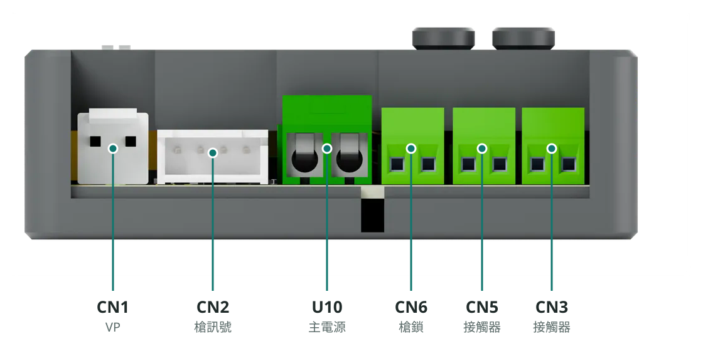
| 接頭 | 腳位（由左到右） | 接到哪裡 |
|---|---|---|
| CN1 | GND、VP | 充電槍的 VP（輔助電源 12 V，喚醒車輛） |
| CN2 | CANL、CANH、GND、CP | 充電槍的訊號線：CAN Bus 與 CP（連接確認） |
| U10 | ＋（120V）、－ | 主電源的直流輸出：控制盒從這裡取電，同時量電壓。DC 60–120 V |
| CN6 | ＋12V、－ | 充電槍的槍鎖（電子鎖線圈） |
| CN5、CN3 | ＋12V、－ | 直流接觸器（繼電器）的線圈，兩組同步動作 |
腳位順序照板上的絲印，左右以「接頭排朝向自己」為準。
側面 USB-C
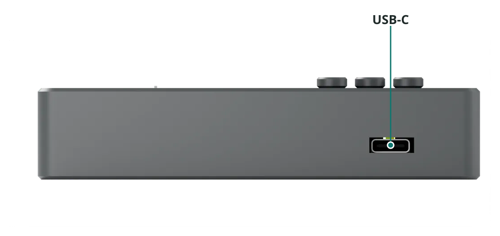
USB-C 是維修、燒錄用的接口，平常不用接；韌體更新請用手機網頁的線上更新（6.15）。
4接線示意
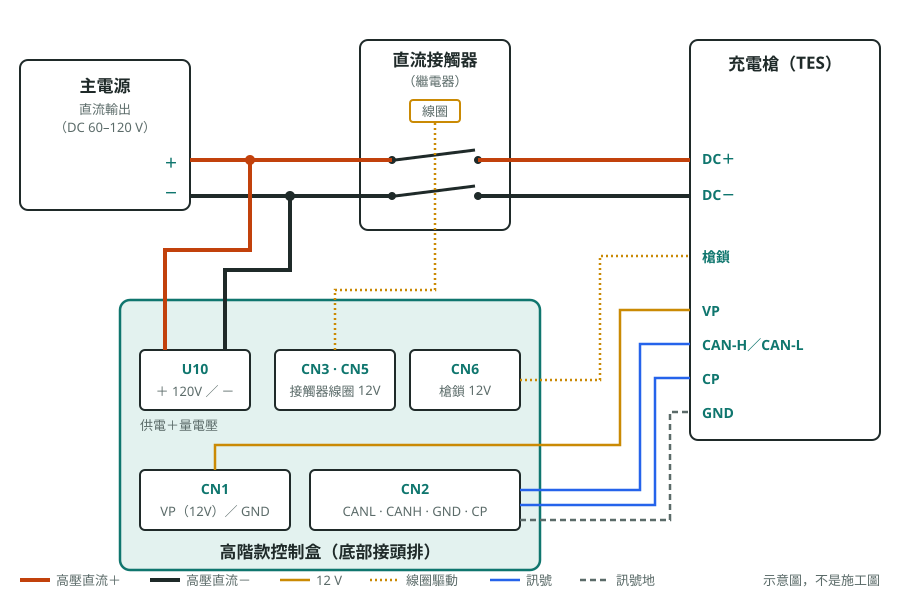
- 電源：主電源的直流輸出接到 U10，控制盒靠它供電，並用它量電壓。主電源沒開，控制盒就不會亮。
- 充電槍大電流：主電源 → 直流接觸器 → 槍的 DC＋／DC－。接觸器由控制盒的 CN3／CN5 控制，交握完成才會閉合，所以平常槍頭不帶電。
- 充電槍訊號：CN2 接 CAN-H、CAN-L、CP 和訊號地；CN1 送 VP 給車；CN6 控制槍鎖。
- 電壓感測：就是 U10 那兩條線，不另外接。
5第一次開機與連 WiFi
5.1 開機
- 確認充電槍還沒插到車上，打開主電源。
- 黃燈亮起，螢幕顯示開機畫面。開著「自動電壓」時會先顯示偵測電壓的畫面，幾秒後進入待機畫面「待機中」。
- 螢幕的待機畫面會顯示目前電源電壓與「SOC:0/80%」（後面的 80% 是充到幾 % 停）。
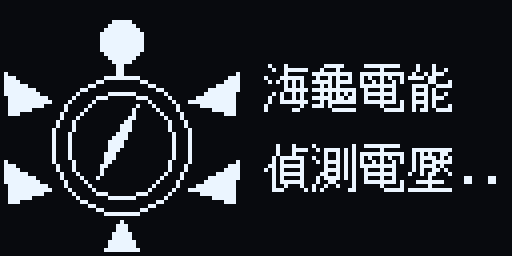
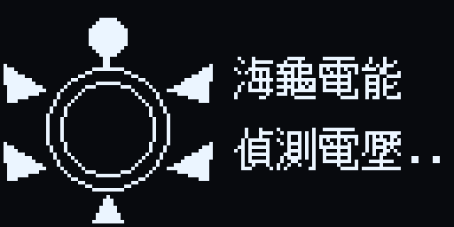
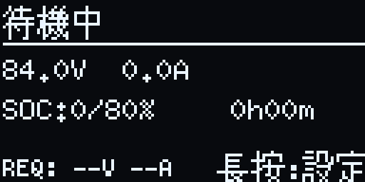
5.2 充電（不用手機也能充）
- 把充電槍插進車的 TES 充電座，確認槍有插到底、卡好。
- 按 START。控制盒會開始跟車交握，螢幕依序顯示準備充電等狀態，聽到車上接觸器「喀」一聲後開始充電，綠燈閃爍。
- 達到設定的條件（預設充到 80%）、車子自己喊停、或你按 STOP，都會結束充電。螢幕顯示「充電完成」與這次充了多少，綠燈恆亮。
- 結束後再拔槍。
5.3 第一次連 WiFi
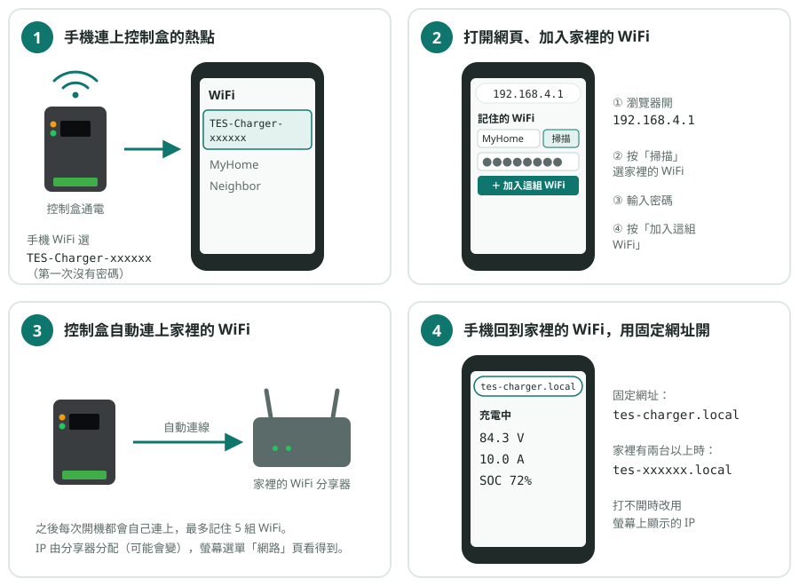
- 控制盒還沒存過任何 WiFi 時，會自己開一個熱點，名稱是
TES-Charger-xxxxxx（xxxxxx 是每台不同的編號），沒有密碼。手機的 WiFi 連上它；手機若提示「這個網路沒有網際網路」，選「保持連線」。 - 手機瀏覽器打開
http://192.168.4.1（或http://tes-charger.local），會看到控制盒的網頁，上方顯示「未連線 · 熱點開著」。 - 往下捲到「⚙ 設定」裡的 WiFi：按「🔍 掃描」，選家裡的 WiFi、輸入密碼，按「＋ 加入這組 WiFi」。舊版韌體是直接填 WiFi 名稱與密碼、儲存後重新啟動（見 5.5）。只支援 2.4 GHz 的 WiFi（ESP32-S3 的規格），5 GHz 的網路連不上。
- 控制盒會自己連上家裡的 WiFi。手機切回家裡的 WiFi，打開
http://tes-charger.local就回到控制盒的網頁。 - 建議把網頁「加到主畫面」，之後一點就開。
- 網頁「網路狀態」區塊的「📶 切換手機 WiFi」會直接打開手機的 WiFi 設定，方便在熱點和家裡的 WiFi 之間切換。Android 可用；iPhone 的 Safari 會顯示網址無效，請自己到「設定 › Wi-Fi」切換。
- WiFi 名稱是中文時，請從掃描清單點選，不要自己打字：有些舊分享器的中文名稱編碼不同，打字會對不上。
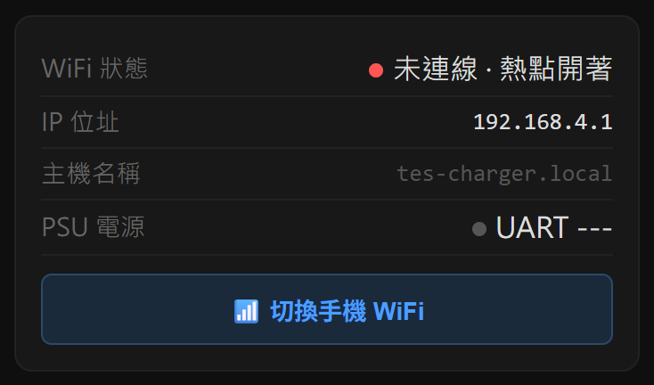
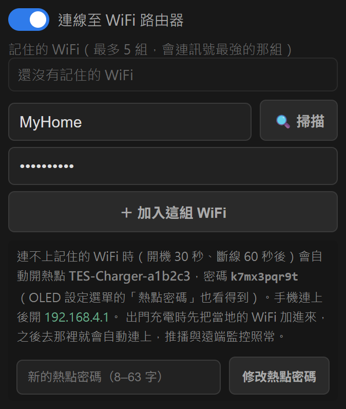
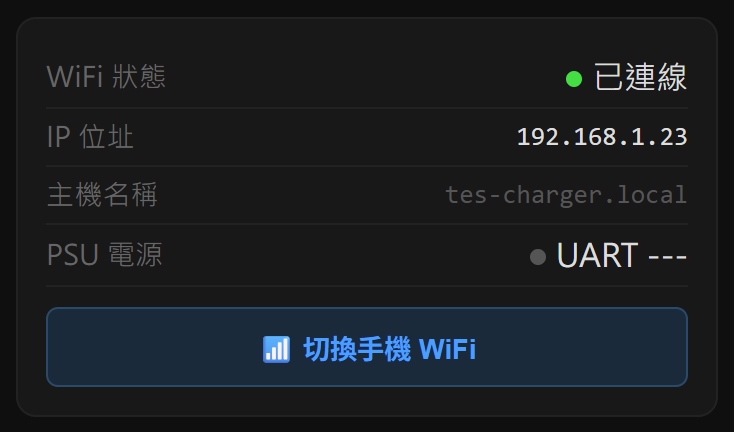
http://tes-charger.local，IP 變了也連得到，連著熱點時也能用。
- 打開
tes-charger.local會先找同一個網路裡的控制盒：只有一台時自動跳進它的控制頁；有兩台以上時會列出所有控制盒（名稱、狀態、電壓、電流），點要看的那一台即可。連不到的那台會顯示「離線」，不影響其他台；「↻ 重新搜尋」重找一次，「本機控制介面 →」直接進你打開的那一台。控制頁左上角的「‹」可以回到這個清單。也可以直接開每台自己的http://tes-xxxxxx.local（xxxxxx 在螢幕選單「網路」頁的最後一行）。 - 部分 Android 手機打不開
.local網址，這時改用螢幕選單「網路」頁顯示的 IP，例如http://192.168.1.23。
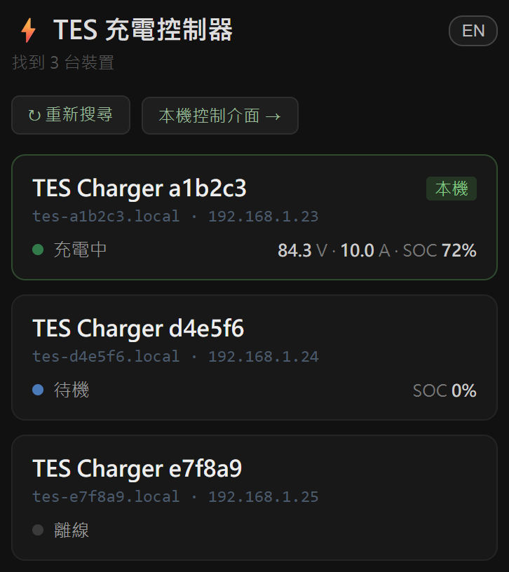
tes-charger.local 會先列出清單，點一台就進它的控制頁；連不到的那台顯示「離線」（只有一台時直接跳過這頁）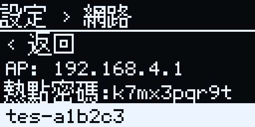
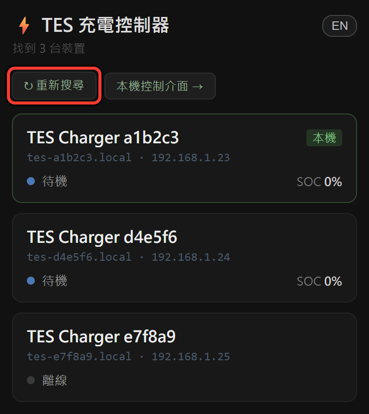
見 6.2
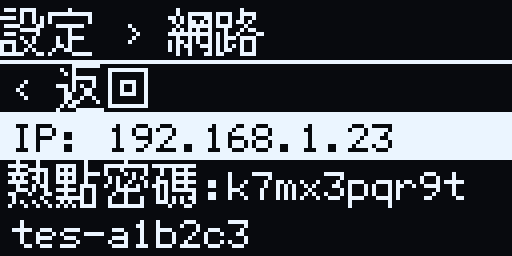
網路」：IP 192.168.1.23、熱點密碼、tes-a1b2c3" width="512" height="256">AP: 192.168.4.15.4 帶出門、換地方用
- 控制盒最多記住 5 組 WiFi，開機時自動連訊號最強的那組。到了新地方，用下面的熱點加入當地的 WiFi，下次就會自己連上。
- 開機 30 秒內連不上任何記住的 WiFi，控制盒會自己開熱點
TES-Charger-xxxxxx，這時有密碼，密碼在 OLED 選單「網路 › 熱點密碼」。家裡的 WiFi 回來後，熱點會在沒人連線 30 秒後自己關掉。 - 熱點密碼可以在網頁上改成自己的（8–63 個英數字元，按「修改熱點密碼」）。正開著的熱點會用舊密碼到它下次打開為止。
- 不再用的 WiFi，在「記住的 WiFi」清單裡按那一組旁邊的移除即可，馬上生效；移除目前連著的那組會立刻斷線。加入、移除都不用按「儲存」。
- 「連線至 WiFi 路由器」開關：關掉後，控制盒下次開機就只開熱點、不連任何 WiFi（例如帶到沒有 WiFi 的地方長期使用）。記住的 WiFi 不會刪掉，打開開關、重新開機就連回去。關之前網頁會先跳確認；關掉的當下不會斷線。
舊版韌體只記得一組 WiFi，連不上時不會自己開熱點。
5.5 看韌體版本、線上更新韌體
出貨時燒的韌體可能比這份說明書舊。照下面做，就能自己更新到最新版，原本的設定會保留。
看目前的版本（兩種都可以）：
- 手機網頁的「🔄 韌體更新」區塊，寫著「目前版本：v3.x.x」。
- 控制盒長按 SETTING 進入選單：新版在「裝置資訊」頁；舊版（英文選單）往下捲到最後的
About那一行。
舊版韌體連 WiFi：熱點一樣是 TES-Charger-xxxxxx、沒有密碼。手機連上後打開 http://192.168.4.1，在設定裡填入家裡 WiFi 的名稱（SSID）與密碼，儲存後按「🔁 重新啟動控制器」，重新開機後就會連上家裡的 WiFi。
更新：
- 確認沒有在充電，控制盒連著能上網的 WiFi，手機也在同一個 WiFi。
- 打開手機網頁，到「🔄 韌體更新」按「⬆ 更新至最新韌體」，確認。
- 等一兩分鐘，控制盒會自己重新啟動。更新中不要關電源、不要拔線。
- 重新整理網頁，看「目前版本」是不是已經變成新版。
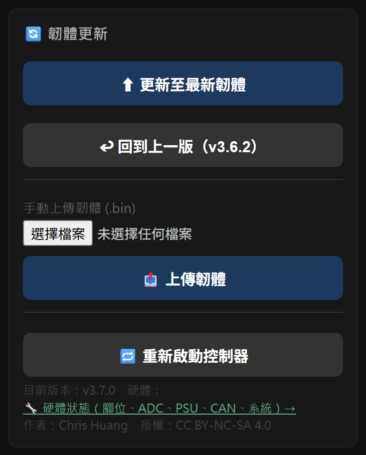
更新失敗、或更新後有問題，請拍下畫面私訊我。也可以按「回到上一版」退回原本的版本（見 6.15）。
6功能與設定：用 OLED、網頁、App 操作
這一章一項一項說明控制盒的功能和設定：它是做什麼的、有哪些選項、預設值與範圍、改了會怎樣，以及用控制盒螢幕（OLED）、手機網頁、手機 App 各自怎麼操作。有標 Beta 的是還在測試的功能。
6.1 三種操作方式與設定怎麼同步
- 控制盒螢幕（OLED）與按鍵
- 不用手機也能操作。在待機或充電畫面按住 SETTING 約半秒放開，進入設定選單。START＝往上、STOP＝往下、SETTING＝進入／確認。改完一定要回到最上層選「儲存並離開」才會存；選「取消」全部不存。選單怎麼操作見 第 7 章。
- 手機網頁
- 手機和控制盒在同一個 WiFi，用瀏覽器打開
http://tes-charger.local（見 5.3）。設定都在「⚙ 設定」區塊，螢幕相關的在「🖥 螢幕（OLED）」區塊。 - 手機 App（目前只有 Android）
- 首頁「充電樁」分頁點控制盒，進入控制盒頁；設定在下面「更多」裡（⚙ 設定、📋 充電紀錄、🖥 螢幕、🔌 CAN 診斷、🔄 韌體與重新啟動、🔧 硬體狀態、📡 遠端監控）。下載與加入控制盒見 6.2。
網頁和 App 怎麼存：
- 開關（例如自動電壓、LuxBeacon、定時充電、自動充電、連線至 WiFi 路由器、允許遠端啟停）一切換就存好。後果不明顯的開關會先跳確認，存失敗會自己切回去。
- 要打字或選的值（電壓、電流、停止條件、時間、網址、螢幕設定等）改了之後，網頁底部會出現「x 項設定未儲存」，按「💾 儲存」才會寫進控制盒，按「捨棄」回到控制盒目前的值。App 是設定頁底部的「儲存（x）」與「捨棄」，螢幕頁是「💾 儲存 x 項」。
- WiFi 的加入、移除和修改熱點密碼，按下去就生效，不用儲存。
三邊會同步：OLED、網頁、App 改的都是控制盒裡的同一份設定，存好之後另外兩邊都看得到。但要注意：
- 網頁只在打開時讀一次設定：別處改過，網頁要重新整理才會顯示新的值。App 重新進入那一頁就會重新讀。
- OLED 選單在打開的那一刻記下所有設定；選「儲存並離開」時，會把選單裡每一項都寫回去。所以選單開著的時候，別人用網頁或 App 改了充電、自動化、螢幕這幾類的設定，會被選單的「儲存並離開」蓋回去。用 OLED 改設定時，請不要同時用手機改。
- 短按 SETTING 切換 SOC 目標（80→95→100%）是馬上存的，不用進選單。
功能 × 操作方式總表
✓＝可以操作或設定；看＝只能看；—＝不行。
| 功能／設定 | OLED | 網頁 | App | 說明 |
|---|---|---|---|---|
| 開始／停止充電 | ✓ | ✓ | ✓ | 6.3 |
| 即時電壓、電流、SOC、剩餘時間 | 看 | 看 | 看 | 6.3 |
| 停止條件與目標值 | ✓ | ✓ | ✓ | 6.4 |
| SOC 目標快速切換（80／95／100%） | ✓ | — | — | 6.4 |
| 最大電壓、自動電壓 | ✓ | ✓ | ✓ | 6.5 |
| 最大電流 | ✓ | ✓ | ✓ | 6.6 |
| 定時充電：開關 | ✓ | ✓ | ✓ | 6.7 |
| 定時充電：時間、到時自動停止 | — | ✓ | ✓ | |
| 自動充電 | ✓ | ✓ | ✓ | 6.8 |
| 推播（ntfy／Webhook） | — | ✓ | ✓ | 6.9 |
| 推播到 App 這支手機 | — | — | ✓ | |
| 記住的 WiFi、熱點密碼、連線至 WiFi 路由器 | 看 | ✓ | ✓ | 6.10 |
| 裝置名稱 | — | ✓ | ✓ | 6.11 |
| 螢幕語言、充電動畫、螢幕保護 | ✓ | ✓ | ✓ | 6.12 |
| LuxBeacon（綠燈報電量） | ✓ | ✓ | ✓ | 6.13 |
| 充電紀錄、曲線、月充電量 | — | ✓ | ✓ | 6.14 |
| 電源效率、電價（電費換算） | — | ✓ | ✓ | |
| 韌體更新、回到上一版、上傳 .bin | 看進度 | ✓ | ✓ | 6.15 |
| 重新啟動控制器 | ✓ | ✓ | ✓ | |
| 遠端監控（MQTT） | — | ✓ | ✓ | 6.16 |
| 聯明：連線方式 | — | ✓ | ✓ | 6.17 |
| 聯明：無線配對（比對 6 位數） | 確認／取消 | ✓ | ✓ | |
| 周邊裝置、更新聯明韌體 | 看 | ✓ | ✓ | |
| 復歸故障 | ✓ | — | — | 8.2 |
| 韌體版本、硬體版本、IP、本機編號 | 看 | 看 | 看 | 6.18 |
| CAN 診斷、硬體狀態 | — | 看 | 看 | 6.18 |
| 網頁／App 的介面語言 | — | ✓ | ✓ | 6.19 |
6.2 手機 App：下載、加入控制盒
海龜電能的手機 App 有網頁的全部功能，另外多了：直接收推播（不用另裝 ntfy，充電中通知列會顯示進度）、自動找控制盒（IP 變了也會自己找回來）、一個 App 管好幾台控制盒、開始充電前多一步確認。
下載：Android 版在海龜電能網站（a950523a.github.io）。目前沒有 iPhone 版：iPhone 在家用網頁，在外面用網站上的「遠端監控網頁」（6.16）。
- 先照 5.3 讓控制盒連上家裡的 WiFi，手機也連同一個 WiFi。
- 打開 App，在「充電樁」分頁按右上角的「＋」或「新增裝置」。App 會自動搜尋同一個 WiFi 裡的控制盒，找到了點一下就加入。
- 搜尋不到時，在「手動輸入位址」填
tes-xxxxxx.local或螢幕選單「網路」頁的 IP，按「連線」。 - 首頁會列出每台控制盒的狀態；點一台進入控制盒頁。
—
—
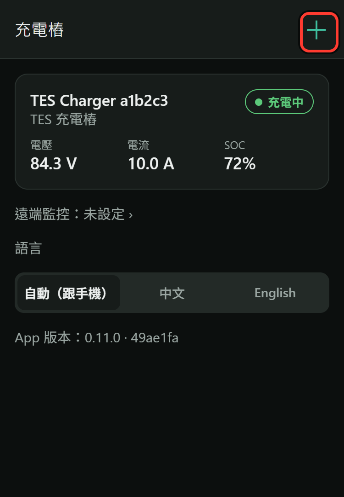
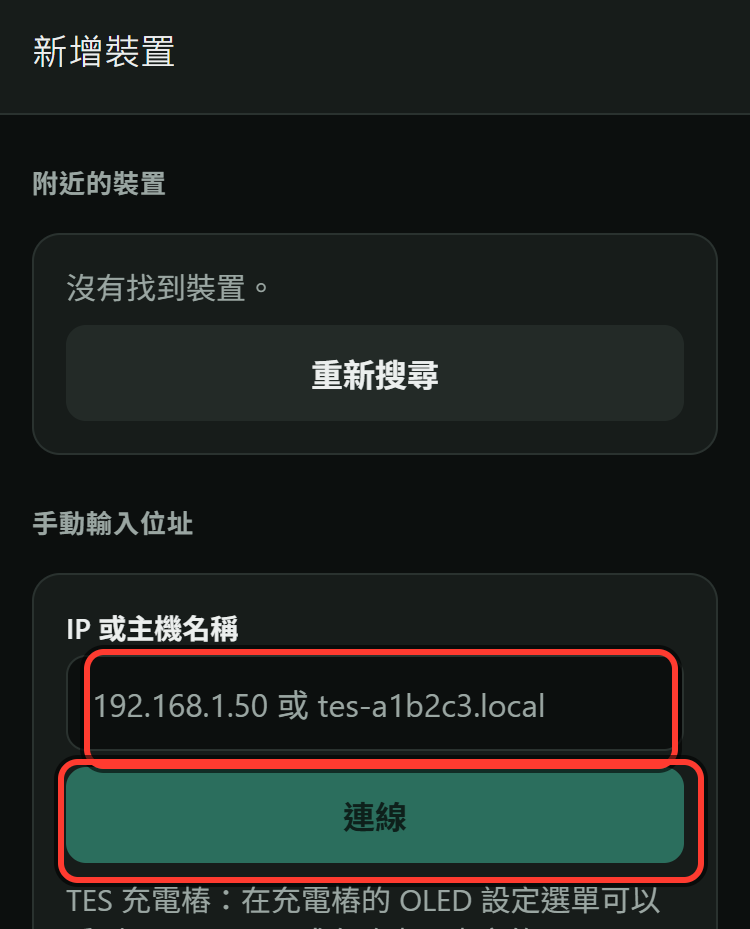
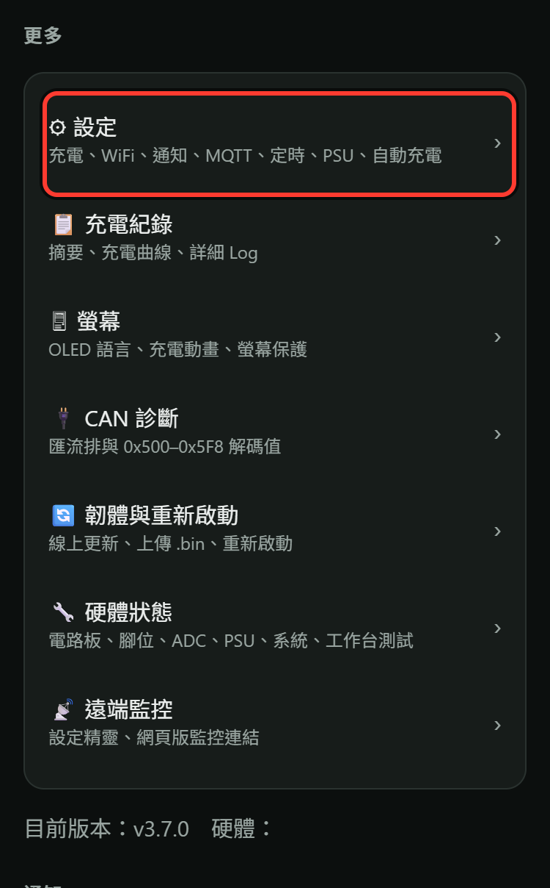
- 手機連不到控制盒時，控制盒頁會直接告訴你它的熱點名稱與密碼；手機連上那個熱點，App 會自己找回控制盒。
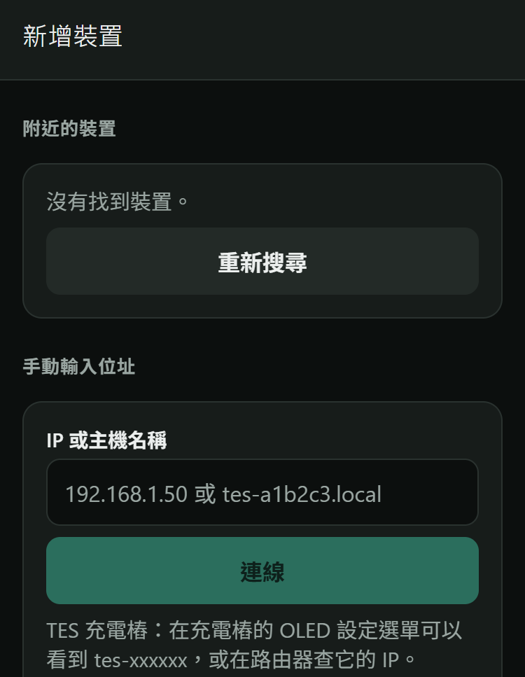
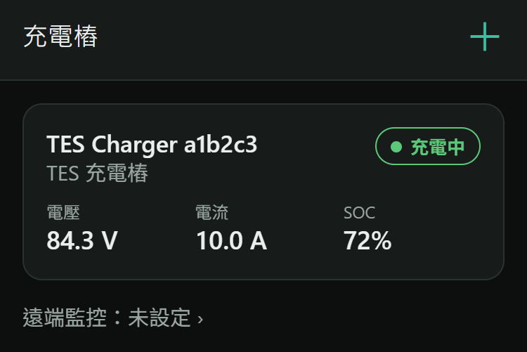
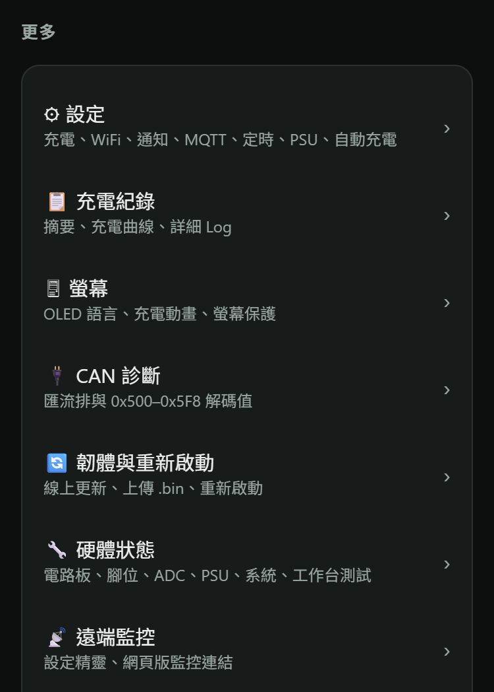
6.3 開始與停止充電、即時數值
控制盒會顯示目前狀態、輸出電壓與電流、即時功率、車子回報的電量（SOC）與目標、預估剩餘時間、這次充入的電量（kWh；網頁與 App 下面小字是 Ah）。開始充電前槍要先插好；達到停止條件、車子自己喊停、或你按停止，都會結束。
- 控制盒本身不量電流：接一般旋鈕電源時，顯示的電流就是「最大電流」的設定值，充入電量也是用它估算的（見 第 9 章）。接聯明時顯示實際電流（6.17）。
- 交握中（「連線中」「準備充電」）按停止會直接取消。
- 韌體更新中不能開始充電。
- 開著「自動電壓」時，量到電源電壓超過控制盒能量的範圍，網頁狀態下方會出現橘色提示、OLED 底行顯示「!電源過高」，請把電源調低（8.2）。
- 故障時，網頁與 App 會用文字說明發生什麼事、為什麼、該怎麼辦；車子充完送出的「車輛緊急停止」用琥珀色顯示，代表不一定是壞事。
- 待機畫面按 START 開始充電。
- 充電中按 STOP 停止。
- 故障畫面按 START 重試。
選單開著時 START／STOP 是上下移動，不會開始或停止充電；先離開選單。
- 網頁最上面看即時數值。
- 按「▶ 開始充電」或「◼ 停止充電」。
- 控制盒頁最上面看即時數值。
- 按「▶ 開始充電」，再按確認（App 多一步確認，避免誤按）。
- 按「◼ 停止充電」直接停止。
在外面用遠端監控時是「▶ 遠端開始」「◼ 遠端停止」（6.16）。
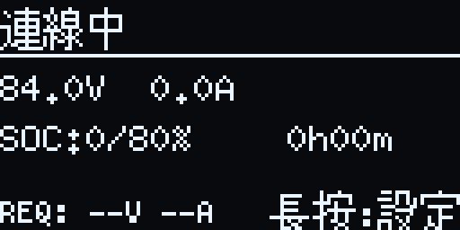
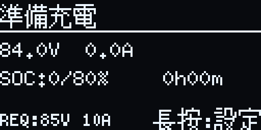
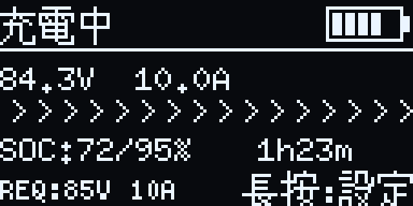
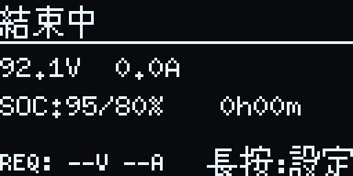
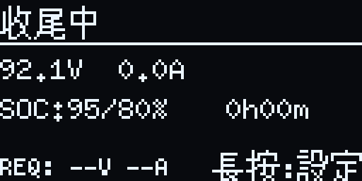
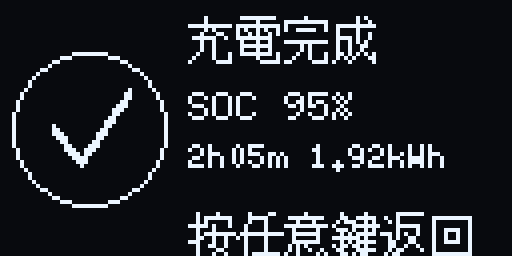
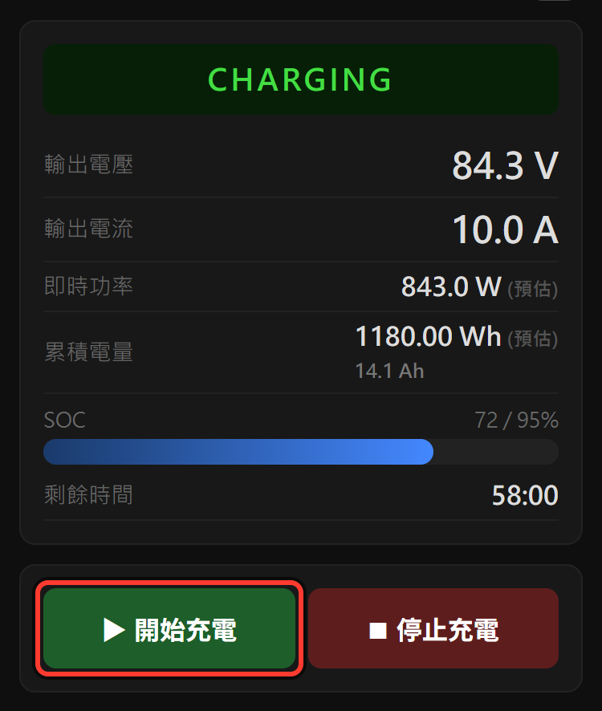
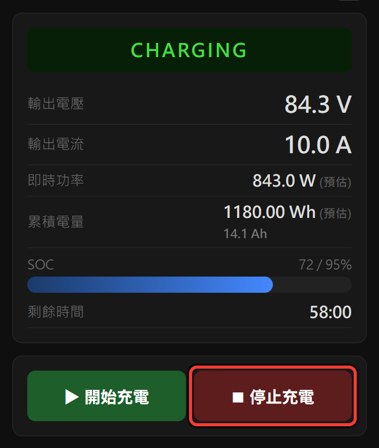
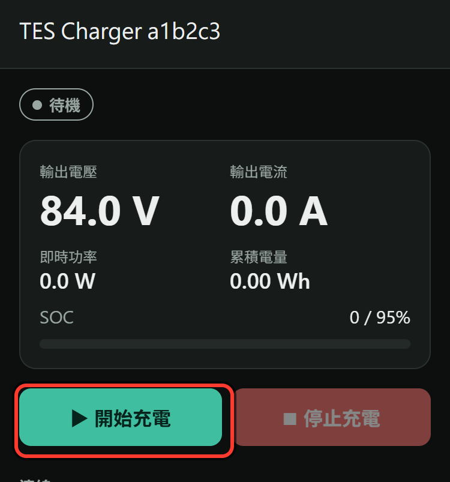
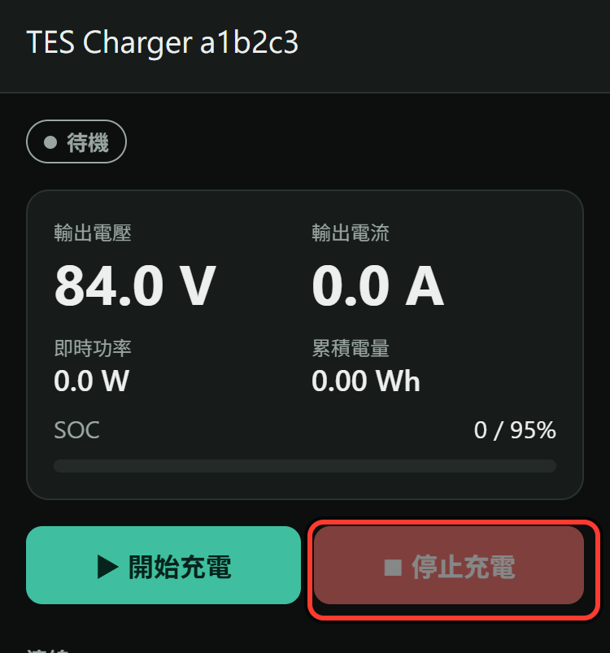
缺圖：開始充電的確認視窗（App 網頁版不會跳出 Alert，截不到）
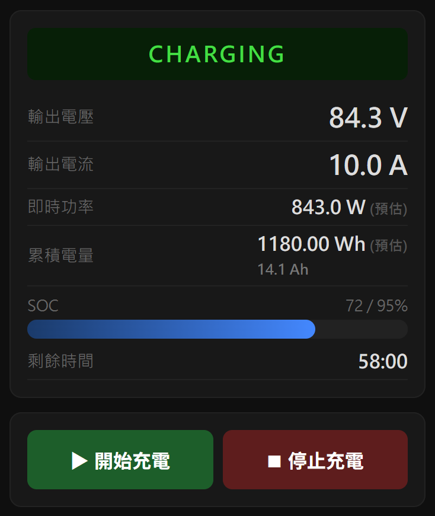
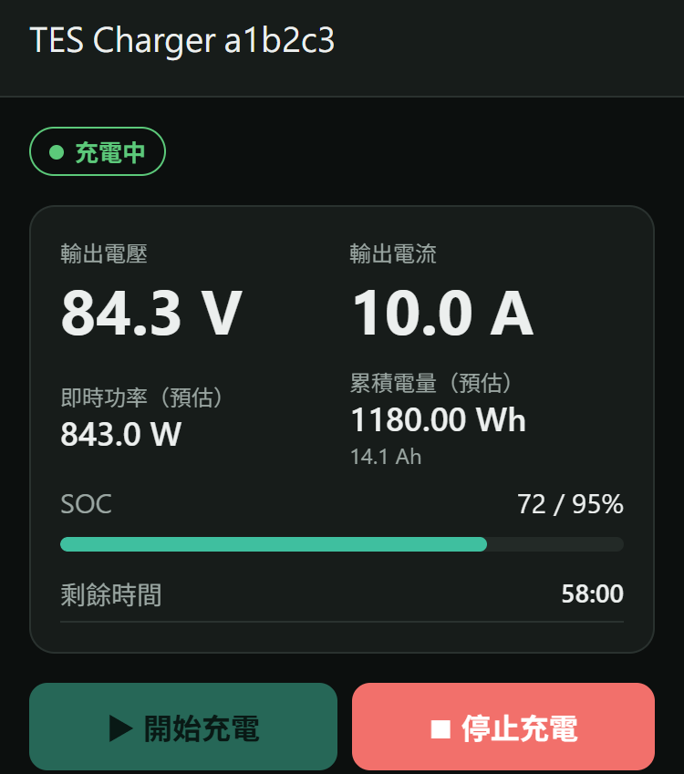
6.4 充到哪裡停（停止條件）
決定這次充電什麼時候自動結束。不管選哪一種，車子的 BMS 認為充飽了一樣會停，不會超過車輛允許的範圍。四種只能選一種：
| 停止條件 | 什麼時候停 | 目標值的範圍 | 預設 | OLED 每按一下（短按／長按） |
|---|---|---|---|---|
| SOC（預設） | 車子回報的電量到目標就停，例如只充到 80% 顧電池 | 20–100% | 80% | ±1%／±5% |
| 電壓 | 輸出電壓到停止電壓就停 | 40–120 V（上限依板子而定） | 100.0 V | ±0.1 V／±1 V |
| 時間 | 充滿設定的分鐘數就停 | 1–600 分鐘 | 120 分鐘 | ±10 分／±30 分 |
| 電量 | 這次充入的電量到目標就停 | 0.1–20 kWh | 1.0 kWh | ±0.1 kWh／±1 kWh |
- 電量：接旋鈕電源時是用「最大電流」設定估算的，電池快滿時車子降電流、估算偏高，所以可能提早停、不會延後。螢幕上數字前的
~就是表示估算。 - 電壓：「停止電壓」是充到幾伏停；它跟「最大電壓」（6.5）是兩回事。
- 四種目標值是分開存的：換停止條件不會改掉其他種的目標值。
- SOC 快速切換（只有 OLED）：待機或充電畫面短按 SETTING，SOC 目標依 80% → 95% → 100% → 80% 輪流切換，馬上存；目前的目標不是這三個數字時，會先跳到 80%。停止條件選其他種時不影響。
- 選的停止條件不同，螢幕顯示的重點也不同：
| 停止條件 | OLED 第二行 | OLED 第三行 |
|---|---|---|
| SOC | 84.3V 10.0A | SOC:72/95%（現在／目標）＋剩餘時間 |
| 電壓 | 84.3V/100.0V（現在／停止電壓） | SOC:72%（參考）＋剩餘時間 |
| 時間 | 84.3V 10.0A | SOC:72%＋83m/120m（已充／設定） |
| 電量 | 84.3V 10.0A | 0.85/1.5kWh（已充入／目標）＋剩餘時間 |
- 按住 SETTING 約半秒，進入「設定」。
- 選「充電 >」（START／STOP 移動，SETTING 進入）。
- 移到「停止條件: SOC」，按 SETTING 進入調整（標題變成「< 調整數值 >」）。
- 按 START 或 STOP 換下一種：SOC → 電壓 → 時間 → 電量 → SOC。按 SETTING 確認。
- 按 STOP 移到下一行的目標值（「目標SOC」「停止電壓」「充電時長」或「目標電量」，只會出現選的那一種），按 SETTING 進入，START 加、STOP 減（按住會連續快速加減），再按 SETTING 確認。
- 按住 SETTING 回到最上層，移到「儲存並離開」按 SETTING。
- 「⚙ 設定」→「充電停止條件」選「依 SOC 停止」「依電壓停止」「依時間停止」或「依充入電量停止」。
- 下面出現對應的欄位：「目標 SOC (%)」「充電停止電壓 (V)」「充電時長上限（分鐘…）」或「充入電量目標（kWh，0.1–20）」，填數字。
- 按底部的「💾 儲存」。
- 控制盒頁 →「更多」→「⚙ 設定」→「充電」。
- 「充電停止條件」點「依 SOC」「依電壓」「依時間」或「依電量」。
- 填下面出現的「目標 SOC」「充電停止電壓」「充電時長上限」或「充入電量目標」。
- 按底部的「儲存」。
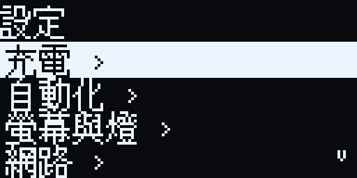
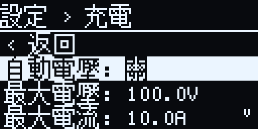


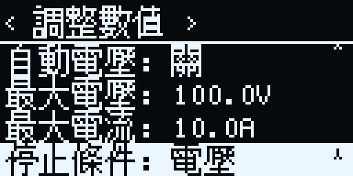
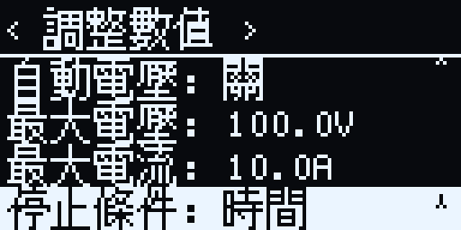
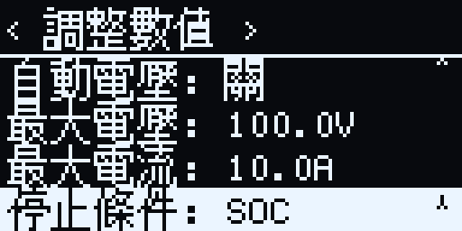
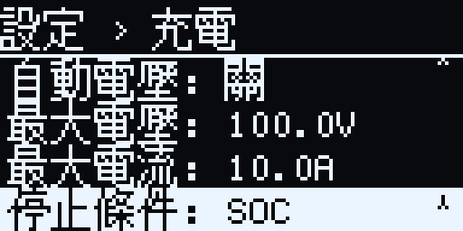
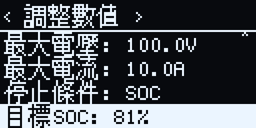
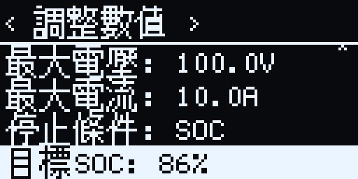
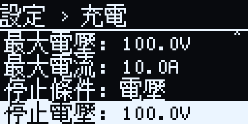
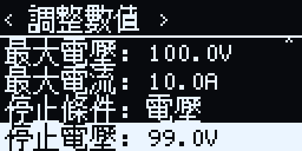
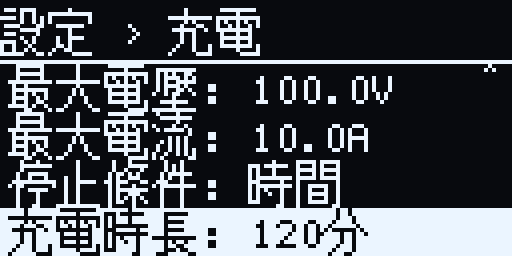
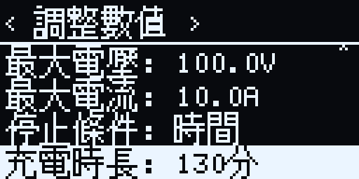
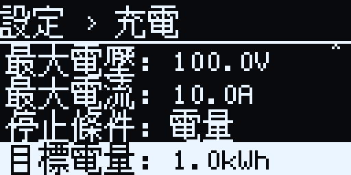
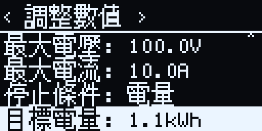
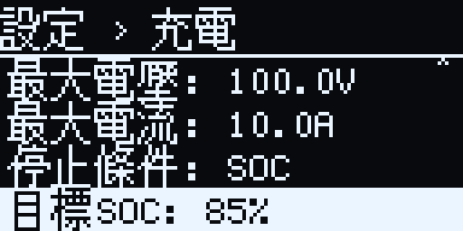
6.5 最大電壓與自動電壓
最大電壓是告訴車子「電源最高會到幾伏」。車子拿它當自己的過壓保護門檻，而且車子要求的電壓比它高時會停止充電（「電源電壓不夠高」）。所以它要跟電源實際輸出的電壓一致；它不是「充到幾伏停」（那是 6.4 的停止電壓）。
- 最大電壓
- 預設 100.0 V，範圍 40–120 V（上限依板子而定，到了就停，網頁與 App 填超過會自動改成上限）。OLED 短按 ±0.1 V、長按 ±1 V。
- 自動設定電壓上限（自動電壓）
- 預設關。打開後，控制盒每次開機會花幾秒（最多 10 秒）量電源電壓，等它穩定後拿量到的值當最大電壓；待機時電源調高，它也會跟著往上（不會往下）；充電中不會變。開著時，最大電壓這一格的名稱會變成「電壓上限」（OLED）／「電壓安全上限」（網頁、App），顯示的是目前在用的值；你填的值只有在開機量不到可用的電壓時（例如電源電壓超過控制盒能量的範圍）才會用。開機時螢幕會顯示「偵測電壓」的動畫。
- 按住 SETTING 約半秒 → 選「充電 >」。
- 自動電壓：移到「自動電壓: 關」，按 SETTING 進入，按 START 或 STOP 切換開／關，再按 SETTING 確認。
- 最大電壓：移到「最大電壓: 100.0V」（自動電壓開著時叫「電壓上限」），按 SETTING，START 加、STOP 減，再按 SETTING。
- 按住 SETTING 回最上層 →「儲存並離開」。
- 「⚙ 設定」→「自動設定電壓上限（依開機 ADC 量測）」開關：一切換就存。
- 「最大電壓 (V)」（自動電壓開著時叫「電壓安全上限 (V)」）填數字。
- 按底部「💾 儲存」。
- 「更多」→「⚙ 設定」→「充電」。
- 「自動設定電壓上限」開關：一切換就存。
- 「最大電壓」（或「電壓安全上限」）填數字，按「儲存」。

6.6 最大電流
告訴車子「電源最多能給幾安培」。控制盒會把它送給車子，接旋鈕電源時也拿它當顯示的電流和估算電量的依據。
- 範圍與預設
- 預設（出廠）10.0 A，範圍 1.0–100.0 A；接聯明時最多到電源的額定電流（填超過會自動改成上限）。OLED 短按 ±0.1 A、長按 ±1 A。
- 一定要知道
- 接一般旋鈕電源時，改這個設定不會改變實際電流，實際電流是電源上的旋鈕決定的。設定要跟旋鈕實際調的電流一樣，要改就兩邊一起改（詳見 第 9 章）。超過 15 A 時不能用自動充電（6.8）。
- 按住 SETTING 約半秒 → 選「充電 >」→ 移到「最大電流: 10.0A」。
- 按 SETTING 進入，START 加、STOP 減（按住連續加減），按 SETTING 確認。
- 按住 SETTING 回最上層 →「儲存並離開」。
- 「⚙ 設定」→「最大電流 (A)」填數字。
- 按底部「💾 儲存」。
- 「更多」→「⚙ 設定」→「充電」→「最大電流」。
- 按「儲存」。
6.7 定時充電（Beta）
每天在設定的時間自動開始、（可選）自動結束，例如離峰時段 23:00–06:00（可以跨夜）。還在測試中，使用時請留意有沒有照時間開始與結束。
- 啟用定時充電
- 預設關。
- 開始充電時間／結束充電時間
- 預設 00:00／06:00，時區固定台灣時間（UTC+8）。只能用網頁或 App 設定，OLED 只有開關。
- 到時自動停止充電
- 預設關。沒勾時，結束時間不會停，就照停止條件充完。
- 注意
- 時間靠網路校時，控制盒要連著能上網的 WiFi；網頁設定區的「NTP」那行顯示「已同步」並附上時間才算好，「等待同步」時排程不會動作。槍要先插好。控制盒開機後第一次對到時，如果當下已在時段內，會馬上開始充電。
- 按住 SETTING 約半秒 → 選「自動化 >」→「[Beta]定時充電: 關」。
- 按 SETTING，START 或 STOP 切換開／關，按 SETTING。
- 回最上層「儲存並離開」。
時間只能在網頁或 App 設。
- 「⚙ 設定」→「⏰ 定時充電」。
- 「啟用定時充電」「到時自動停止充電」是開關，一切換就存。
- 「開始充電時間」「結束充電時間」選好後按底部「💾 儲存」。
- 「更多」→「⚙ 設定」→「定時充電（Beta）」。
- 「啟用定時充電」「到時自動停止充電」開關一切換就存。
- 填「開始充電時間」「結束充電時間」，按「儲存」。
6.8 自動充電（Beta）
插上槍就自動開始，不用按 START。還在測試中，使用時請留意狀態。
- 插槍或 CAN 信號自動啟動充電
- 預設關。開著時，送給車子的 VP（輔助電源）一直通著，車子插上槍或送出充電許可就會開始。
- 限制
- 「最大電流」超過 15 A 時不能用：網頁會顯示警告，自動充電不會啟動；請把最大電流降到 15 A 以內（電源旋鈕一起調）。充完一次後，要拔槍再插才會再次自動開始。一般故障 10 秒後會自動復歸；按過 EMERGENCY 仍要手動復歸。
- 按住 SETTING 約半秒 → 選「自動化 >」→「[Beta]自動充電: 關」。
- 按 SETTING，START 或 STOP 切換，按 SETTING。
- 回最上層「儲存並離開」。
- 「⚙ 設定」→「⚡ 自動充電」→「插槍或 CAN 信號自動啟動充電」開關。
- 打開時會先跳確認，確認後就存好。
- 「更多」→「⚙ 設定」→「自動充電（Beta）」→「插槍或 CAN 信號自動啟動充電」。
- 一切換就存（打開時先確認）。
缺圖：打開開關時的確認視窗（瀏覽器的確認框，截圖工具截不到）
缺圖：打開開關時的確認視窗（App 網頁版不會跳出 Alert）
6.9 推播通知（Beta）
開始充電、充電完成、故障、緊急停止，以及控制盒在充電中意外重新啟動時，通知你的手機。推播要控制盒連著能上網的 WiFi 才送得出去。有兩種收法，可以同時用：
- ntfy／Webhook（任何手機）
- 預設停用。選「ntfy.sh（推薦）」會產生一個專屬頻道，用免費的 ntfy App 訂閱。「自定義 Webhook」給會寫程式的人填自己的網址，控制盒會把通知 POST 過去。「停用」就不送這種通知。通知一律是中文。頻道網址等於通知的鑰匙，不要公開分享；「🎲 重新產生」換新頻道後，舊頻道就收不到，訂閱的手機要重新訂閱。
- App 推播（Android）
- 在 App 打開「推播到這支手機」即可，不用裝 ntfy；一台控制盒最多登記 4 支手機，通知照那支手機 App 的語言。充電中通知列會顯示進度。
這項只能用網頁或 App 設定。
- 手機先安裝 ntfy App（Android／iOS）。
- 「⚙ 設定」→「🔔 推播通知」選「ntfy.sh（推薦）」，按底部「💾 儲存」。
- 按「📲 訂閱」自動帶入頻道（或「📋 複製」網址，到 ntfy App 手動新增）。
- 按「📨 測試」確認收得到。
用 Webhook：選「自定義 Webhook」，填網址後儲存。
- App 推播：控制盒頁往下到「通知」，打開「推播到這支手機」，按「📨 傳送測試通知」試一次。清單裡可以移除不用的手機。
- ntfy／Webhook：「更多」→「⚙ 設定」→「推播通知」，選「ntfy.sh」「自定義 Webhook」或「停用」，按「儲存」；有「📋 複製」「🎲 重新產生」「📲 訂閱」「📨 傳送測試通知」。
這項只能用網頁或 App 設定
缺圖：「推播到這支手機」打開後的開關與手機清單（App 網頁版不能開推播）
6.10 WiFi、熱點與「連線至 WiFi 路由器」
第一次連 WiFi 的步驟見 5.3，帶出門的用法見 5.4。這裡是每個設定的說明。只支援 2.4 GHz。
- 記住的 WiFi
- 最多 5 組，開機時連訊號最強的那組。加入、移除都馬上生效，不用儲存；移除目前連著的那組會立刻斷線、改找其他組（都沒有就開熱點）。WiFi 名稱是中文時請從掃描清單點選。
- 熱點密碼
- 連不上任何記住的 WiFi 時（開機 30 秒、斷線 60 秒後）自動開的熱點
TES-Charger-xxxxxx的密碼。出廠是每台不同的 10 碼，可改成自己的 8–63 個英數字元；正開著的熱點用舊密碼到它下次打開為止。第一次設定（還沒存過 WiFi）的熱點沒有密碼。 - 連線至 WiFi 路由器
- 預設開。關掉後，控制盒下次開機只開熱點、不連任何 WiFi；記住的 WiFi 不會刪，打開開關、重新開機就連回去。關掉的當下不會斷線。
- 按住 SETTING 約半秒 → 選「網路 >」。
- 可以看：「IP:」（連著 WiFi）或「AP:」（只有熱點）、「熱點密碼」、本機編號
tes-xxxxxx。
WiFi 的加入、移除、改密碼只能用網頁或 App。
- 「⚙ 設定」→「記住的 WiFi」清單：按「移除」移除一組（會先確認）。
- 加入：按「🔍 掃描」點選 WiFi（或在「WiFi 名稱」打字），輸入「WiFi 密碼」（開放網路留空），按「＋ 加入這組 WiFi」。
- 熱點密碼：在「新的熱點密碼（8–63 字）」填好，按「修改熱點密碼」。
- 「連線至 WiFi 路由器」開關：關掉時會先確認，一切換就存。
- 「網路狀態」區塊的「📶 切換手機 WiFi」打開手機的 WiFi 設定（Android 可用；iPhone Safari 不行）。
- 「更多」→「⚙ 設定」→「WiFi」。
- 清單每組右邊的「移除」；下面「WiFi 名稱」「🔍 掃描附近的 WiFi」「WiFi 密碼」「＋ 加入這組 WiFi」。
- 「修改熱點密碼」欄位與按鈕。
- 「連線至 WiFi 路由器」開關（重新啟動後生效）。
- 控制盒頁的「連線」區塊有「📶 切換手機 WiFi」。
缺圖：移除與關閉開關時的確認框
缺圖：移除與關閉開關時的確認視窗、掃描結果清單
6.11 裝置名稱
給控制盒取個名字，例如「車庫充電樁」，家裡有好幾台時用來分辨。名稱會顯示在網頁標題、裝置清單、App 與遠端監控。預設空白（顯示成 TES Charger xxxxxx），最多 24 個字元。改名不會改網址（tes-xxxxxx.local 固定不變），書籤照樣能用。
這項只能用網頁或 App 設定。OLED「網路」頁最後一行的 tes-xxxxxx 可以對照是哪一台。
- 「⚙ 設定」最上面的「裝置名稱」填名字。
- 按底部「💾 儲存」。
- 「更多」→「⚙ 設定」→「裝置」→「裝置名稱」。
- 按「儲存」。
這項只能用網頁或 App 設定
6.12 螢幕：語言、充電動畫、螢幕保護
- 語言
- 控制盒螢幕的語言：中文（預設）或 English。只影響 OLED，網頁與 App 的語言另外設（6.19）。OLED 上的選項用各自的語言寫，選錯了也認得出要切回哪一個。
- 充電中動畫
- 充電中右上角的電池圖示（從目前電量往上一格格填）與電壓下面往前流的箭頭。選項：全部（預設，網頁叫「電池＋箭頭」）、只要電池、只要箭頭、關閉。
- 螢幕保護
- 待機（含充電完成、故障說明畫面）多久沒人碰就進入：5 分鐘（預設）、15 分鐘、30 分鐘、關閉。進入後只剩一小塊狀態、時間、電源電壓，每分鐘換角落；按任一鍵喚醒（喚醒的那一下不做其他事），插槍、遠端開始、故障也會喚醒。
- 螢幕保護樣式
- 游泳的烏龜（預設）或全黑。螢幕保護關閉時 OLED 不顯示這一項。
- 一律開著的
- 待機時整個畫面每分鐘偏移 1 個像素防烙印，不能關，也不是故障。
- 按住 SETTING 約半秒 → 選「螢幕與燈 >」。
- 移到「語言: 中文」「充電動畫: 全部」「螢幕保護: 5分鐘」或「保護樣式: 烏龜」，按 SETTING。
- 按 START 換下一個選項、STOP 換上一個，按 SETTING 確認。
- 回最上層「儲存並離開」。
- 「🖥 螢幕（OLED）」區塊：「顯示語言」「充電中動畫」「螢幕保護（待機多久沒人碰）」「螢幕保護樣式」各點一個選項。
- 按底部「💾 儲存」。
- 「更多」→「🖥 螢幕」。
- 「顯示語言」「充電中動畫」「螢幕保護」與樣式各點一個。
- 按「💾 儲存 x 項」（「捨棄」放棄修改）。
6.13 LuxBeacon（用綠燈報電量）
打開後，充電中的綠燈改成用閃的次數報電量，不用看螢幕也知道充到哪。例如 72% 是閃 7 下、停一下、閃 2 下；數字 0 閃 10 下；每組之間停約 1 秒。預設關（關著時充電中綠燈是慢閃）。
- 按住 SETTING 約半秒 → 選「螢幕與燈 >」→「LuxBeacon: 關」。
- 按 SETTING，START 或 STOP 切換，按 SETTING。
- 回最上層「儲存並離開」。
- 「⚙ 設定」→「LuxBeacon SOC 燈號」開關，一切換就存。
- 「更多」→「⚙ 設定」→「WiFi」下面的「LuxBeacon SOC 燈號」開關，一切換就存。
6.14 充電紀錄與月充電量
控制盒保存最近 20 次充電的摘要，斷電也不會消失。每一筆有：日期（有對到時才有）、充電時間、充入電量（kWh 與 Ah）、開始→結束的 SOC、停止原因（故障時直接寫故障說明，例如「充電槍鬆脫」）。
- 電量標「（預估）」：那次沒有接會回報電流的電源，是用「最大電流」設定估的。
- 「未完成」：按了開始，但還沒進入充電就失敗（例如交握逾時），最值得看詳細紀錄。
- 前面有 ▸ 的可以點開，看這次的充電曲線（電壓、電流與車子要求的電流、SOC）和詳細紀錄（每個數值什麼時候變了）。詳細紀錄可以過濾關鍵字、存成檔案傳給我。曲線與詳細紀錄放在記憶體，只保留最近 8 次、一斷電就清除；之前的只剩摘要（前面是一個淡色的點）。
- 月充電量：最近 12 個月的長條圖與「本月充入 x kWh（x Ah，x 次）」；顏色較淡的部分是估算的。這是充進電池的直流電，不是電費單的度數。
- 電源效率（月充電量換算）
- 預設 90%，範圍 50–100%。用來把充進電池的電量換算成插座用掉的電。
- 每度電價
- 預設 0（不換算電費），範圍 0–20 元。填了之後圖上會多顯示約幾度電、約多少錢（僅供參考）。
充電紀錄只能用網頁或 App 看。充電完成畫面會顯示這一次的 SOC、時間與電量（一分鐘或按任意鍵返回）。
- 「📋 充電紀錄」區塊：上面是月充電量（滑鼠停在長條上看那個月），下面是紀錄表格，「↻ 重新整理」重新讀取。
- 點有 ▸ 的列展開曲線與詳細紀錄；在「過濾關鍵字…」打字過濾，按「⬇ 下載」存檔。
- 電費換算：「⚙ 設定」→「月充電量換算：電源效率（%，50–100）」「每度電價（元，0 = 不換算電費）」，按「💾 儲存」。
- 「更多」→「📋 充電紀錄」：月充電量圖點長條看各月份；下面每一筆是一張卡片，「↻ 重新整理」重新讀取。
- 點有 ▸ 的卡片看「📈 充電曲線」與「📝 詳細 Log」，「過濾」欄位打字，「⬇ 匯出 Log」分享出去。
- 電費換算：「⚙ 設定」→「月充電量換算」→「電源效率」「每度電價」，按「儲存」。
缺圖：「⬇ 匯出 Log」的分享選單（手機系統畫面）
6.15 韌體更新、回到上一版、重新啟動
看版本與第一次更新的步驟見 5.5。這裡是每個功能的說明。
- 更新至最新韌體（線上更新）
- 控制盒要連著能上網的 WiFi。約一兩分鐘，完成後自動重新啟動，設定保留。更新中不要關電源；充電中不能更新，更新中也不能開始充電。螢幕會顯示「線上更新韌體」、進度與「請勿斷電」，完成時「完成，重新啟動中」；網頁、App 不管是誰按的都看到同一個進度。失敗時螢幕顯示原因約 15 秒並寫「原本的韌體照常運作」，可以照常用、再重試。
- 手動上傳韌體 (.bin)
- 我另外給你韌體檔時用（例如控制盒連不上網際網路）。不是這台控制盒的檔案（例如聯明的韌體）會被拒絕。
- 回到上一版
- 按鈕上寫著上一版的版本號。充電中、更新中不能按；上一版太舊、不支援這塊板子時會被擋下並說明。回到較舊的版本後，新版才有的紀錄格式（例如充電紀錄的 Ah）可能在下次充電時清掉，確認視窗會提醒。新版開不起來時控制盒也會自動退回上一版，但要控制盒的開機程式也是新版才有（線上更新不會更新開機程式）。
- 重新啟動控制器
- 效果跟關電源再開一樣。充電中不能用。OLED 選單裡沒存的設定會丟掉。重開前螢幕會顯示「重新啟動中…」。
- 更新：OLED 不能啟動更新，只顯示進度。
- 重新啟動：按住 SETTING 約半秒 → 選「維護 >」→「重新啟動」，按 SETTING，畫面變「再按一次重新啟動」，3 秒內再按一次 SETTING。移動游標就取消。充電中顯示「重新啟動(請先停止)」不能用。
- 「🔄 韌體更新」→「⬆ 更新至最新韌體」→ 確認。
- 「↩ 回到上一版（vX.X.X）」→ 確認。
- 「手動上傳韌體 (.bin)」選檔案 →「📤 上傳韌體」。
- 「🔁 重新啟動控制器」→ 確認，網頁會等控制盒回來後自己重新整理。
- 「更多」→「🔄 韌體與重新啟動」。
- 「韌體更新」：「⬆ 更新至最新韌體」、「↩ 回到上一版（vX.X.X）」。
- 「手動上傳韌體（.bin）」：「選擇 .bin 檔案」→「上傳韌體」。
- 「重新啟動」：「🔁 重新啟動控制器」。
缺圖：按鈕按下後的確認框與更新中的進度條
缺圖：確認視窗、選檔畫面、更新中的進度
6.16 遠端監控（MQTT，Beta）
在家用網頁或 App 就夠了。想出門在外也看到即時狀態才需要：控制盒把狀態送到一個 MQTT 雲端伺服器（broker），手機從那裡讀。充電中每 10 秒、其他時候每 30 秒送一次，狀態一變就馬上送；控制盒斷線時，遠端會顯示「離線」。
- Broker URL
- 預設空白（不使用）。例如
mqtts://帳號:密碼@xxxx.emqxsl.com:8883。請用mqtts://（加密）和需要帳號密碼的服務；免費的可以申請 EMQX Cloud Serverless。免帳號的公開 broker（例如broker.emqx.io）任何人都看得到你的充電狀態，只建議測試用。 - Topic Prefix
- 這台的頻道名稱，預設
tes/xxxxxx，通常不用改。 - 允許透過 MQTT 遠端啟停充電
- 打開後可以從遠端開始、停止充電。韌體預設是開（為了相容舊版）；用 App 設定精靈設定時會自動關掉。任何能對這個 broker 發訊息的人都能控制你的充電樁，只在用自己帳號密碼的 broker 時打開。
- 注意
- MQTT 的設定改完，要重新啟動控制器才會生效（包括「允許遠端啟停」）。
這項只能用網頁或 App 設定。
- 「⚙ 設定」→「📡 MQTT 遠端監控」：填「Broker URL（空白 = 停用）」「Topic Prefix」，按底部「💾 儲存」。
- 「允許透過 MQTT 遠端啟停充電」開關：打開時會先確認，一切換就存。
- 「🔁 重新啟動控制器」讓設定生效。
- 設定好後網頁多一個「📡 遠端監控」區塊：「🔗 開啟監控」打開遠端監控網頁，「📋 複製連結」可以傳給家人（連結裡沒有密碼）。
- 最簡單：「更多」→「📡 遠端監控」設定精靈，填「Broker 位址」「帳號」「密碼」，按「完成設定」。App 會寫進控制盒、重新啟動，等到第一筆遠端狀態就完成。家裡有好幾台時，別台按「套用 App 的遠端設定」。
- 還沒有 broker：展開「還沒有 broker？（免費的 EMQX Cloud）」→「開啟 EMQX Cloud」申請。
- 手動設定：「⚙ 設定」→「MQTT 遠端監控（Beta）」的「Broker URL」「Topic Prefix」「允許透過 MQTT 遠端啟停充電」。
- 遠端啟停按鈕只在 broker 有帳號密碼、而且控制盒允許遠端啟停時出現；開始要確認。
這項只能用網頁或 App 設定
缺圖：遠端監控網頁（monitor.html）本身
缺圖：精靈按「完成設定」之後的進度畫面、遠端啟停按鈕（需要真的 broker）
遠端監控網頁（iPhone 或不用 App 的人）：網址在海龜電能網站上，也可以從控制盒網頁的「🔗 開啟監控」直接打開。在監控網頁輸入 MQTT 帳號密碼後就能看即時狀態；建議先把它加到主畫面，加好之後再輸入帳號密碼（加到主畫面的網頁和瀏覽器是分開存的）。遠端開始會先確認；按鈕跟著狀態變（待機才能開始、充電中才能停止、離線時都不能按）；控制盒沒打開「允許遠端啟停」時按鈕不能按並說明原因；送出指令 20 秒狀態沒變，會告訴你控制盒沒有反應。
6.17 搭配可程式電源（聯明）
用一般旋鈕電源的人這一節不用設定：網頁「PSU 電源」那行顯示「UART ---」是正常的。
搭配聯明可程式電源（整流模組加上控制板）時，控制盒會照車子的要求直接設定電源的電壓與電流，並讀回實際值：
- 顯示的是實際電流，充入電量也不再是估算。
- 「最大電流」最多到電源的額定電流，填超過會自動改成上限。
- 網頁會多一行「AC 輸入／可用功率」（App 是「可用功率」）：電源量到的插座電壓與目前能用的功率（插座的電流上限在聯明那邊設定）。功率不夠時，控制盒會自動把電流降下來，並顯示「電流上限 x A（比最大電流設定小）」。
- 充電中電源斷線會停止充電（「電源斷線」）；開始時就沒連到電源的話，照旋鈕電源的方式充。
- 用無線（ESP-NOW）時，控制盒充電中不會掃描 WiFi（掃描會換頻道、讓電源斷線），家裡 WiFi 斷線要等充完才會重連。
- PSU 連線方式
- UART（有線，預設）或 ESP-NOW（無線，Beta）。改了要儲存並重新啟動才會換過去。
- 無線配對
- 只有選 ESP-NOW 才需要。像藍牙一樣，兩邊會顯示同一組 6 位數配對碼，數字一樣才在兩邊都確認；之後每一則無線訊息都會驗證，別人沒辦法冒充你的電源。只有一邊確認，60 秒後逾時、什麼都不存。
- 周邊裝置
- 列出連著的電源：類型、有線或無線、硬體版本、韌體版本（舊版聯明韌體不會回報，顯示「版本未知」）。
- 更新聯明的韌體
- 選我給你的聯明 .bin 檔，控制盒轉傳給聯明；更新中不能充電，完成後控制盒會等聯明重新連上、確認新版本。顯示「這個節點的韌體還不能從控制器更新」時，那台聯明要先用 USB 更新一次，請私訊我。
- 連線方式只能用網頁或 App 改。
- 配對時：螢幕顯示「電源配對」→「搜尋中…」→「找到電源…」→ 6 位數。數字跟聯明一樣按 START（是），不一樣按 STOP（否）。成功顯示「配對成功、已安全連線」；失敗會寫原因：逾時、已取消、電源端取消、安全檢查失敗（離其他裝置遠一點再試）、「電源韌體太舊」（先更新聯明）。
- 看狀態：按住 SETTING 約半秒 → 選「周邊裝置 >」：「電源有線: OK」或「電源無線: -58dBm」（未配對、失聯、傳送失敗）、節點硬體、韌體、ID。
- 「⚙ 設定」→「🔌 PSU 電源設定」選「UART（有線）」或「ESP-NOW（無線）」，按「💾 儲存」，再重新啟動控制器。
- 配對（控制盒待機中）：按「📡 開始配對」，聯明那邊也開始配對；網頁跳出配對碼，數字相同按「數字相同，確認」，不同按「不同／取消」；聯明那邊也要確認。
- 「網路狀態」的「PSU 電源」看連線（例如
ESP-NOW -58dBm，綠色最好；「需重新配對」是舊版留下的配對，重新配對一次）。 - 「🔌 周邊裝置」：看版本；更新聯明時選 .bin 檔，按「📤 上傳並更新電源節點」。
- 「更多」→「⚙ 設定」→「PSU 電源」點「UART（有線）」或「ESP-NOW（無線）」，按「儲存」，再重新啟動。
- 「📡 開始配對」：App 跳出配對碼視窗，比對後確認。
- 控制盒頁「連線」區塊看「PSU 電源」與「可用功率」。
- 「🔄 韌體與重新啟動」→「周邊裝置」看版本；「上傳電源節點韌體（.bin，由控制器轉傳）」更新聯明。
缺圖：上傳聯明 .bin 的選檔與轉傳進度
6.18 狀態與診斷：版本、CAN 診斷、硬體狀態
平常用不到。回報問題時我可能會請你截圖這些畫面。
- 韌體版本、硬體版本、IP、本機編號
- OLED「裝置資訊」頁有硬體與韌體版本，「網路」頁有 IP 與
tes-xxxxxx。網頁「🔄 韌體更新」區塊寫目前版本，「網路狀態」寫 IP 與主機名稱；App 在「🔄 韌體與重新啟動」與控制盒頁「連線」區塊。 - 🔌 CAN 診斷
- 控制盒和車子之間最後收發的 CAN 訊息（充電許可、車子要求的電壓電流、SOC 等）與通訊狀態，沒插車時全部是 0。網頁點標題展開；App 在「更多」→「🔌 CAN 診斷」。
- 🔧 硬體狀態
- 電路板圖，各零件即時上色（輸出開著會亮、按鍵按下會變藍、故障會框紅），旁邊是腳位、電壓量測、電源連線、CAN、系統的數值。網頁在「🔄 韌體更新」區塊最下面的連結；App 在「更多」→「🔧 硬體狀態」。裡面的「工作台測試模式」是維修用的，請不要自己操作（會讓充電槍頭帶電）。
- 按住 SETTING 約半秒 → 選「裝置資訊 >」看「硬體」與韌體版本；「網路 >」看 IP 與本機編號。
CAN 診斷與硬體狀態只能用網頁或 App 看。
- 「🔌 CAN 診斷」點標題展開。
- 「🔄 韌體更新」最下面「🔧 硬體狀態（腳位、ADC、PSU、CAN、系統）→」。
- 「更多」→「🔌 CAN 診斷」或「🔧 硬體狀態」。
缺圖：「裝置資訊」頁（會顯示硬體版本，說明書不放）
缺圖：硬體狀態頁（/hw）本身（假控制盒沒有硬體資料）
缺圖：CAN 診斷頁與硬體狀態頁的內容（假控制盒沒有 CAN 與硬體資料）
6.19 網頁與 App 的語言
網頁與 App 介面的語言，跟控制盒螢幕的語言（6.12）是分開的。App 推播通知的文字會照 App 的語言。
OLED 只能設定它自己的語言（6.12）。
- 網頁右上角的「中／EN」切換，頁面會重新載入。預設跟手機瀏覽器的語言，記在這支手機的瀏覽器裡。
- 首頁最下面「語言」選「自動（跟手機）」「中文」或「English」。
7OLED 畫面、按鍵與選單
7.1 常見畫面
下面是新版的中文畫面；舊版韌體是英文畫面，內容相同。
- 最上面一行是狀態：待機中、連線中（跟車子交握）、準備充電、充電中、結束中、收尾中、故障、緊急停止。
- 最下面一行的
REQ是車子目前要求的電壓與電流。第二、三行依停止條件不同，見 6.4。 - 充電中右上角的電池圖示與往前流的箭頭是充電動畫（6.12）。
- 待機一段時間沒人動會進入螢幕保護（6.12）。待機時整個畫面每分鐘偏移 1 個像素，這是防止螢幕烙印，不是故障。
- 螢幕顯示「重新啟動中…」：有人從選單、網頁或 App 要求重新啟動，一秒內會重開。
- 螢幕出現反白的
BENCH TEST：有人在硬體狀態頁做工作台測試（維修用），繼電器與燈號由網頁控制。按 START、插上槍或按 EMERGENCY 會立刻結束，接著顯示TEST ENDED與原因 3 秒，然後恢復正常。 - 韌體更新與電源配對時，螢幕會換成專用畫面（6.15、6.17），而且蓋過選單。
- 畫面上的數字都是示意。
7.2 按鍵
「長按」是按住約半秒。調整數值時按住 START／STOP 會每 0.1 秒連續快速加減。
| 按鍵 | 平常 | 在選單中 | 調整數值時 |
|---|---|---|---|
| START | 開始充電；故障畫面時重試 | 往上 | 短按小步加，長按連續快速加 |
| STOP | 停止充電（交握中按也會取消） | 往下 | 短按小步減，長按連續快速減 |
| SETTING | 短按：切換 SOC 目標 80／95／100% 長按：進入設定選單 | 短按：進入分頁／進入調整／執行 長按：在分頁裡回上一層 | 短按：確認，回到選單 |
| EMERGENCY | 緊急停止，任何時候都有效。按下後要到選單「維護 › 復歸故障」才能恢復 | ||
- 充電完成畫面上，按任何一顆鍵都會回到待機畫面（這時按 SETTING 不會切換 %）。插著槍按 START 則會再充一次。
- 螢幕保護時，第一下按鍵只會喚醒（EMERGENCY 除外）。
- 電源配對時，START＝數字相同、確認；STOP＝取消（6.17）。
- 沒有組合鍵。上蓋的 EN／BOOT 是維修用的，見第 3 章。
7.3 設定選單怎麼操作
- 在待機或充電畫面按住 SETTING 約半秒放開，進入「設定」最上層：七個分類，最下面是「儲存並離開」「取消」。右邊的
^／v表示上面／下面還有。 - START／STOP 移動，SETTING 進入分類。分類第一行是「< 返回」；在分類裡長按 SETTING 也會回到最上層。
- 移到要改的項目按 SETTING，標題變成「< 調整數值 >」：START 加（或換下一個選項）、STOP 減（或換上一個），再按 SETTING 確認，回到移動模式。
- 全部改完，回到最上層選「儲存並離開」才會存。選「取消」全部不存。

—
—
選單開著時別人用網頁或 App 改設定，選「儲存並離開」會蓋回去，見 6.1。韌體更新或電源配對開始時，螢幕會換成那個畫面。
7.4 完整選單樹
依螢幕上的順序。「選項／範圍」裡的「短按／長按」是調整數值時每按一下的變化。預設是韌體的出廠值。
| 分類 › 項目（螢幕上的字） | 選項／範圍（預設） | 短按／長按 | 說明 |
|---|---|---|---|
| 充電 > | |||
| 自動電壓 | 開／關（關） | 切換 | 6.5 |
| 最大電壓（自動電壓開著時叫「電壓上限」） | 40–120 V，上限依板子（100.0 V） | ±0.1 V／±1 V | 6.5 |
| 最大電流 | 1.0–100.0 A，接聯明時到額定（10.0 A） | ±0.1 A／±1 A | 6.6 |
| 停止條件 | SOC → 電壓 → 時間 → 電量（SOC） | 換下一個／上一個 | 6.4 |
| 目標SOC（停止條件＝SOC 時） | 20–100%（80%） | ±1%／±5% | 6.4 |
| 停止電壓（停止條件＝電壓時） | 40–120 V，上限依板子（100.0 V） | ±0.1 V／±1 V | 6.4 |
| 充電時長（停止條件＝時間時） | 1–600 分（120 分） | ±10 分／±30 分 | 6.4 |
| 目標電量（停止條件＝電量時） | 0.1–20.0 kWh（1.0 kWh） | ±0.1／±1 kWh | 6.4 |
| 自動化 > | |||
| [Beta]定時充電 | 開／關（關）；時間要用網頁或 App 設 | 切換 | 6.7 |
| [Beta]自動充電 | 開／關（關） | 切換 | 6.8 |
| 螢幕與燈 > | |||
| 語言 | 中文／English（中文） | 切換 | 6.12 |
| 充電動畫 | 全部／電池／箭頭／關（全部） | 下一個／上一個 | 6.12 |
| 螢幕保護 | 5分鐘／15分鐘／30分鐘／關（5分鐘） | 下一個／上一個 | 6.12 |
| 保護樣式（螢幕保護不是「關」時） | 烏龜／全黑（烏龜） | 切換 | 6.12 |
| LuxBeacon | 開／關（關） | 切換 | 6.13 |
| 網路 >（只能看） | |||
| IP: …／AP: …／WiFi: --- | 連著 WiFi 顯示 IP；只有熱點顯示 AP 位址；都沒有顯示 --- | — | 6.10 |
| 熱點密碼 | 自動熱點的密碼 | — | 6.10 |
| tes-xxxxxx | 本機編號，網址是 tes-xxxxxx.local | — | 5.3 |
| 裝置資訊 >（只能看） | |||
| 硬體 | 硬體版本 | — | 6.18 |
| （版本號） | 韌體版本，例如 v3.7.0 | — | 5.5 |
| 周邊裝置 >（只能看） | |||
| 電源有線: OK／---，或 電源無線: -xxdBm／未配對／失聯／傳送失敗 | 電源的連線狀態 | — | 6.17 |
| 節點硬體、韌體版本、ID（連著聯明時才有） | 聯明的版本與識別碼；舊版顯示「節點版本未知」 | — | 6.17 |
| 維護 > | |||
| 復歸故障 | 按 SETTING 執行並關閉選單：清除緊急停止與故障說明 | — | 8.2 |
| 重新啟動 | 按 SETTING 後變「再按一次重新啟動」，3 秒內再按才執行；充電中顯示「重新啟動(請先停止)」 | — | 6.15 |
| （最上層最後兩行） | |||
| 儲存並離開 | 把選單裡的值全部存起來，回到狀態畫面 | — | 6.1 |
| 取消 | 全部不存，回到狀態畫面 | — | |
8指示燈與故障訊息
8.1 指示燈
| 燈 | 狀態 | 意思 | 樣子 |
|---|---|---|---|
| 黃 | 恆亮 | 控制盒有電 | |
| 綠 | 慢閃（亮半秒、滅半秒） | 充電中 | |
| 綠 | 恆亮 | 充電完成（拔槍或開始下一次後熄滅） | |
| 綠 | 一組一組短閃 | LuxBeacon 開啟時的充電中：用閃的次數報電量。例如 72% 是閃 7 下、停一下、閃 2 下；數字 0 閃 10 下；每組之間停約 1 秒 | |
| 紅 | 恆亮 | 故障停止或緊急停止，看螢幕上的原因 | |
| 紅 | 每秒短閃一下 | 無線配對的電源斷線（只有使用無線電源節點時會出現） |
「樣子」是渲染圖：會閃的燈左邊一格是亮、右邊一格是滅，下面寫各多久。
8.2 故障訊息
故障時充電會停止，紅燈亮，螢幕顯示原因（舊版韌體是英文）。處理好之後按 START 重試即可（緊急停止除外）。原因會一直留在螢幕上，直到下一次開始充電。
| 螢幕顯示 | 意思 | 怎麼處理 |
|---|---|---|
| 車輛沒有回應 | 按了開始，但 15 秒內沒收到車子的回應 | 確認槍插好、車子電門狀態；檢查 CAN 線 |
| 車輛CAN中斷 | 充電途中收不到車子的訊號 | 檢查充電槍與 CAN 線 |
| 電源電壓不夠高 | 車子要的電壓比「最大電壓」設定高 | 需要換輸出電壓更高的電源（不是把設定調高） |
| 預充電逾時 | 交握到一半沒有完成 | 拔起來重新插好再試 |
| 車輛接觸器沒閉合 | 車上的接觸器沒有動作 | 車輛端的問題，重試；持續發生請聯絡我 |
| 電源斷線 | 充電中電源失去連線（使用可通訊電源時） | 檢查電源電源線與連線 |
| 車輛回報供電異常 | 車子認為充電端有問題 | 檢查充電樁與電源，重試 |
| 車輛電池異常 | 車子的電池回報故障 | 看車輛儀表，必要時找車廠 |
| 充電槍鬆脫 | 充電中 CP 訊號斷了 | 重新插好並鎖緊 |
| 緊急停止已按下 | 按了 EMERGENCY | 確認安全後，選單「維護 › 復歸故障」 |
| 車輛緊急停止 | 車子送出停止要求 | 充電結束時出現屬正常，會自己恢復 |
| !電源過高 | 待機時量到的電壓超過這塊板子能量的範圍 | 立刻關掉電源，確認電源輸出在 60–120 V 之內 |
右上角的 0x.. 是給我看的代碼，回報問題時請連同畫面一起拍照。第三行的小字是故障當下的數值（例如車子要求幾伏、等了幾秒），網頁上有完整的說明。
| 狀態 | OLED | 網頁 | 手機 App |
|---|---|---|---|
| 待機中 | |||
| 待機中：電源電壓過高 | |||
| 連線中 | |||
| 準備充電 | |||
| 充電中 | |||
| 結束中 | |||
| 收尾中 | |||
| 充電完成 | |||
| 車輛沒有回應 | |||
| 車輛CAN中斷 | |||
| 電源電壓不夠高 | |||
| 預充電逾時 | |||
| 車輛接觸器沒閉合 | |||
| 電源斷線 | |||
| 車輛回報供電異常 | |||
| 車輛電池異常 | |||
| 充電槍鬆脫 | |||
| 緊急停止已按下 | |||
| 車輛緊急停止 | |||
| 故障自動復歸後（原因還留著） |
故障後多久能再充：控制盒會自己回到待機——「充電槍鬆脫」1 秒、「車輛緊急停止」5 秒、其他故障 10 秒；只有按了 EMERGENCY 的「緊急停止已按下」要手動到選單「維護 › 復歸故障」。回到待機後原因還會留在螢幕與網頁上讓你看清楚，按 START 開始下一次、或在選單選「復歸故障」才會清掉。
「充電槍鬆脫」在開著自動充電時不算故障：拔槍就是正常結束。
9安全注意事項
- 沒有防水。請不要放在戶外或會淋到雨的地方，也注意溫度與濕度，避免受潮生鏽。
- 未經 BSMI、UL 等安規認證。這是個人研發的技術方案，不是通過認證的量產商品。
- 只能接直流 60–120 V 的電源，不能直接插 110V／220V 交流電。
- 內部有高壓直流。通電時不要打開外殼、不要拔插 U10 的接線。
- 充電中有異味、冒煙、異常發熱，立刻按 EMERGENCY，再關掉電源。
- 任何第三方補能設備都可能影響車輛原廠保固，請自行評估。
電流設定：設定值要和電源實際的電流一樣
控制盒目前不量電流，接一般旋鈕電源時也沒辦法控制電源的輸出電流：實際電流是電源上的電流旋鈕決定的。控制盒會把「最大電流」的設定值當成目前的電流，顯示在螢幕與網頁上、回報給車子，也用它估算充入的電量。所以：
- 「最大電流」的設定要跟電源旋鈕實際調的電流一樣。出廠是 10 A，電源也要調在 10 A。
- 要改電流，兩邊一起改：先調電源的電流旋鈕，再把「最大電流」改成同一個數字。只改設定，實際電流不會變，顯示與電量估算就會不準。
- 不要超過你用的充電槍、線材與電源的標示額定；超過額定使用，風險由你自行承擔，造成的損壞不在保固範圍。電流調高後請定期摸摸槍頭與插頭，明顯燙手、有焦味或變色就立刻調回來。
搭配聯明可程式電源時不用手動對齊：控制盒會直接設定電源的電流並讀回實際值（見 6.17）。
插家用 110V 插座時，插座的容量上限是 1650 W，連續好幾個小時接近滿載有過熱的風險；高功率使用請改插 220V，並避免使用延長線。
網路安全
- 控制盒的網頁沒有登入密碼。連在同一個 WiFi 的人（或連上控制盒熱點的人）都能打開網頁開始、停止充電、改設定、更新韌體。請只讓信任的人連你的 WiFi，WiFi 本身一定要有密碼。
- 第一次設定用的熱點沒有密碼，設定完請讓它連上家裡的 WiFi；之後自動開的熱點有密碼（見 5.4），也可以改成自己的。
- 別的網站沒辦法偷偷替你按控制盒的按鈕：控制盒只接受它自己網頁和 App 送來的操作。
- 遠端監控請用要帳號密碼的 MQTT 服務並用
mqtts://；「允許遠端啟停」只在這種服務上打開（見 6.16）。 - 「最大電壓」會告訴車子電源最高多少伏，車子拿它當過壓保護的門檻。不要讓不熟的人亂改。
自己接線的人
控制盒只適合具備高壓直流經驗的人自行接線。電源的選配、充電槍、線材、保護與組裝都要自己負責；CAN Bus 接錯或短路會造成車輛 BMS 永久性損壞。
10規格
| 項目 | 內容 |
|---|---|
| 適用規格 | TES-0D-02-01（台灣電動機車 TES 直流充電） |
| 主控晶片 | ESP32-S3（WiFi 2.4 GHz 802.11 b/g/n） |
| 電源輸入（U10） | DC 60–120 V |
| 出廠最大電流設定 | 10 A（要跟電源實際的電流一致，見第 9 章） |
| 電流量測 | 無（顯示的電流是設定值） |
| 控制輸出 | 12 V：接觸器線圈 ×2（CN3、CN5）、槍鎖（CN6）、VP（CN1） |
| 顯示與操作 | OLED 螢幕、4 顆按鍵、3 顆指示燈 |
| 外殼尺寸 | 約 68.7 × 102.7 × 21.3 mm（3D 列印外殼） |
| 防水 | 無 |
| 安規認證 | 無 |
11保固與聯絡
- 控制盒：交付後 3 個月內，非人為損壞免費維修或更換。
- 進水、受潮、摔落、自行拆改不在保固範圍。
- 電流調高到超過充電槍、線材或電源的額定，因此造成的損壞不在保固範圍。
- 過了保固期，有問題一樣可以找我，畢竟是我設計的，我會盡力協助。
聯絡方式：Facebook 粉專「海龜電能」私訊
facebook.com/profile.php?id=61582382523577
網站：a950523a.github.io
保固、維修請附上訂單單號，並拍下螢幕畫面（有故障時）與「裝置資訊」頁的韌體版本。